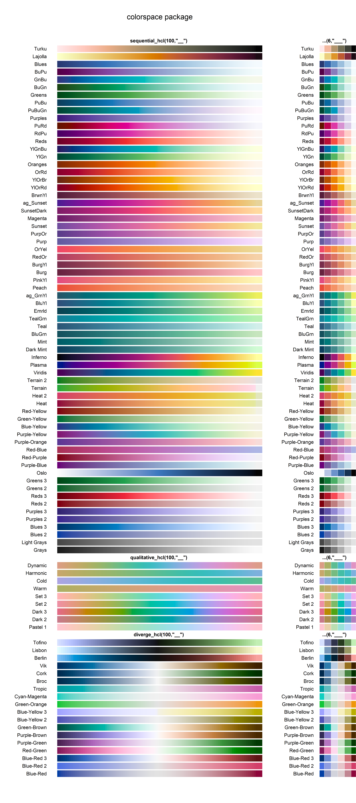

R Plot tools
by S. M. Nielsen
Colors
In R, many options exist when choosing colors for a plot. So below you will find specify the color (usually written after col=) in a plotting function.
Colors by names
In R, colors can be called by their names - there are a total of 657 different names. Below, I am showing 555 of these (the remaining 102 are gray 0-100 and are very similar to grey 0-100).

#FYI - this is how I made the color overview
COLNAMES <- colors()[c(1:151,254:662)]
MATRIX <- matrix(c(1:length(COLNAMES)), ncol=8, nrow=70)
x = 1:ncol(MATRIX); y = 1:nrow(MATRIX)
par(mar=c(0,0,0,0))
image(x, y, t(MATRIX), col = COLNAMES, axes=F, ylab="", xlab="")
text(rep(x,each=length(y)), rep(y,length(x)), COLNAMES, cex=1,
col=c(rep("black",23),"white","black",rep("white",5),
rep("black",42),"white",rep("black",85),rep("white",20),
rep("black",180),"white",rep("black",15),"white",
rep("black",12),rep("white",2),rep("black",166)))
Colors by numbers (0 to 8)
For convenience, the numbers 0 to 8 can be used to call 8 different colors:
#FYI - this is how I made the color overview
COLNAMES <- c(0:8)
MATRIX <- matrix(c(1:length(COLNAMES)), ncol=2, nrow=5)
x = 1:ncol(MATRIX); y = 1:nrow(MATRIX)
par(mar=c(0,0,0,0))
image(x, y, t(MATRIX), col = COLNAMES, axes=F, ylab="", xlab="")
text(rep(x,each=length(y)), rep(y,length(x)), COLNAMES, cex=1, font=2,
col=c("black","white",rep("black",7),"white"))
Colors by hexadecimals and RGB
For more advanced users, it is possible to specify the colors as hexadecimals, which is a system that describes colors in terms of red, green, and blue (#rrggbb), each character having 16 possible symbols: 0 to 9 and A to F.
Another system, RGB (red, green, blue) can be used as well, specified with the function rgb(r,g,b), where each symbol is on an intensity scale from 0-1. If you are searching for a very specific color, you may use an RGB color picker like this one (just remember to divide by 255 before inserting the numbers in the rgb function).
More info can be found in this cheatsheet.
The color names (or numbers) can easily be converted to hexadecimals with the col2hex function (from the gplots package), hexadecimals can be converted to color names with the color.id function (plotrix package), and hexadecimals (or color names) can be converted to rgb with the col2rgb function (grDevices package). Click on ‘CODE’ to see examples.
#Hex from color names og numbers
library(gplots) #If the gplots package is not installed, run this: install.packages("gplots")
col2hex(c("white","black","red","green","blue","cyan","magenta","yellow","grey","black", "violetred4"))
col2hex(c(1:8)) #Numbers cannot be 0 or below
#Color names from hex
library(plotrix) #If the plotrix package is not installed, run this: install.packages("plotrix")
color.id(c("#8B2252")) #To convert more colors at once, use sapply( as shown below.
sapply(c("#FFFFFF","#000000","#FF0000","#00FF00","#0000FF","#00FFFF","#FF00FF","#FFFF00","#BEBEBE","#000000","#8B2252"), color.id)
#RGB from hex or color name (NB, gives rgb on a scale from 0-255. Divide by 255 to use these in the rgb-function)
library(grDevices) #If the grDevices package is not installed, run this: install.packages("grDevices")
col2rgb(c("#8B2252", "violetred4"))/255#FYI - this is how I made the color overview
library(gplots) #If the gplots package is not installed, run this: install.packages("gplots")
library(plotrix) #If the plotrix package is not installed, run this: install.packages("plotrix")
library(grDevices) #If the grDevices package is not installed, run this: install.packages("grDevices")
COLNAMES_Numbers <- c(c(0:8),"[none]")
COLNAMES_Hex <- col2hex(c("white",1:8,"violetred4"))
COLNAMES_Names <- sapply(COLNAMES_Hex, color.id)
COLNAMES_Names <- as.vector(unlist(lapply(COLNAMES_Names, `[[`, 1))) #Using only one name for each
COLNAMES_RGB <- as.data.frame(sapply(as.data.frame(t(col2rgb(COLNAMES_Names)/255)),round,2)) #Only 3 decimals
COLNAMES_RGB <- paste("rgb(",COLNAMES_RGB$red,",",COLNAMES_RGB$green,",",COLNAMES_RGB$blue,")",sep="") #Organize
COLNAMES <- paste(COLNAMES_Numbers, COLNAMES_Hex, COLNAMES_RGB, COLNAMES_Names, sep=" = ")
MATRIX <- matrix(c(1:length(COLNAMES)), ncol=2, nrow=5)
x = 1:ncol(MATRIX); y = 1:nrow(MATRIX)
par(mar=c(0,0,0,0))
image(x, y, t(MATRIX), col = COLNAMES_Hex, axes=F, ylab="", xlab="")
text(rep(x,each=length(y)), rep(y,length(x)), COLNAMES, cex=1, font=2,
col=c("black","white","black","black","white",rep("black",4),"white"))
Transparent colors
For all colors, it is possible to specify transparancy. For color names, you will need the transparent function (yarrr package). For hexadecimals and RGB, you just add an extra value to the codes, i.e. #rrggbbaa and rgb(r,g,b,a), respectively. Below, you can see with and without adding ‘0.2’ in the RGB code for violetred4 in a plot with random numbers.
#FYI - this is how I made the color overview
par(mfrow=c(2,1), mar=c(2,2,3,1))
plot(rnorm(100), pch=20, cex=5, ann=F, col=rgb(0.55,0.13,0.32), yaxt='n', xaxt='n')
mtext("Here, the color is specified as col=rgb(0.55,0.13,0.32)", side=3, line=0.5, font=2)
plot(rnorm(100), pch=20, cex=5, ann=F, col=rgb(0.55,0.13,0.32,0.2), yaxt='n', xaxt='n')
mtext("Here, the color is specified as col=rgb(0.55,0.13,0.32,0.2)", side=3, line=0.5, font=2)For color names and RGB, the added value is going from 0.0 to 1.0, whereas for hexdecimals, the symbols to add are less forward. See a full list of codes for transparency here.
#FYI - this is how I made the color overview
par(mfrow=c(3,1), mar=c(4,2,0,2))
library(yarrr) #If the yarrr package is not installed, run this: install.packages("yarrr")
plot(0:10/10, rep(1,11), pch=20, cex=5, ann=F, yaxt='n', xaxt='n', bty='n', ylim=c(0,4),
col=c(transparent("violetred4", 1),
transparent("violetred4", 0.9),
transparent("violetred4", 0.8),
transparent("violetred4", 0.7),
transparent("violetred4", 0.6),
transparent("violetred4", 0.5),
transparent("violetred4", 0.4),
transparent("violetred4", 0.3),
transparent("violetred4", 0.2),
transparent("violetred4", 0.1),
transparent("violetred4", 0.0)))
#mtext('Color specified as col = transparent("violetred4",trans.val=[a])', side=1, line=2.5, font=2)
text(0.5,2, 'Color specified as col = transparent("violetred4",[a])', font=2, cex=1.4)
mtext("[a]", side=1, line=0.3, at=1.05)
axis(1,at=c(0:10/10), labels=rev(c(0:10/10)))
plot(0:10/10, rep(1,11), pch=20, cex=5, ann=F, yaxt='n', bty='n', ylim=c(0,4),
col=c(rgb(0.55,0.13,0.32,0),
rgb(0.55,0.13,0.32,0.1),
rgb(0.55,0.13,0.32,0.2),
rgb(0.55,0.13,0.32,0.3),
rgb(0.55,0.13,0.32,0.4),
rgb(0.55,0.13,0.32,0.5),
rgb(0.55,0.13,0.32,0.6),
rgb(0.55,0.13,0.32,0.7),
rgb(0.55,0.13,0.32,0.8),
rgb(0.55,0.13,0.32,0.9),
rgb(0.55,0.13,0.32,1)))
#mtext("Color specified as col = rgb(0.55,0.13,[a])", side=1, line=2.5, font=2)
text(0.5,2, "Color specified as col = rgb(0.55,0.13,[a])", font=2, cex=1.5)
mtext("[a]", side=1, line=0.3, at=1.04)
axis(1,at=c(0:10/10))
plot(0:10/10, rep(1,11), pch=20, cex=5, ann=F, yaxt='n', xaxt='n', bty='n', ylim=c(0,4),
col=c("#8B225200",
"#8B22521A",
"#8B225233",
"#8B22524D",
"#8B225266",
"#8B225280",
"#8B225299",
"#8B2252B3",
"#8B2252CC",
"#8B2252E6",
"#8B2252FF"))
#mtext('Color specified as col = "#8B2252[aa]"', side=1, line=2.5, font=2)
text(0.5,2, 'Color specified as col = "#8B2252[aa]"', font=2, cex=1.5)
mtext("[aa]", side=1, line=0.3, at=1.04)
axis(1,at=c(0:10/10), labels=c("00","1A","33","4D","66","80","99","B3","CC","E6","FF"))
Color palettes
There exists different types of color palattes from many different packages. They all have in comon, that you choose the number of different colors you want from the palettes, and they return the hexadecimal codes. Below, you can find a selection of color palette functions.
#FYI - this is how I made the color overview
library("grDevices")
library("colorRamps")
library("colorspace")
layout(matrix(c(1,1,2,1,1,2), nrow = 2, ncol = 3, byrow = TRUE), widths=c(2,1), heights=c(3))
par(mar=c(0,9,0,0))
N <- 100
COLORS_grDevices <- c("rainbow","heat.colors","terrain.colors","topo.colors","cm.colors")
COLORS_colorRamps <- c("blue2red","blue2green","green2red","blue2yellow","cyan2yellow","magenta2green","matlab.like","matlab.like2","primary.colors", "ygobb")
COLORS_colorspace <- c("diverge_hsv","diverge_hcl","terrain_hcl","heat_hcl", "sequential_hcl","rainbow_hcl")
TEXT <- c("colorspace package","colorRamps package","grDevices package")
COLORS <- c(COLORS_colorspace,"",COLORS_colorRamps,"",COLORS_grDevices,"")
YMAX <- length(COLORS)
LABELS <- paste(COLORS,"(",N,")",sep="")
LABELS <- ifelse(LABELS==paste("(",N,")",sep=""),"",LABELS)
plot(1:N, rep(1,N), ylim=c(1,YMAX), yaxt='n', xaxt='n', ann=F, bty='n')
axis(2, at=c(1:YMAX)+0.02, labels=LABELS, las=1, cex.axis=1, col = NA, col.ticks = 0)
x<-1
for(i in 1:YMAX){
if(COLORS[i]==""){
text(50, i, TEXT[x],font=2)
x<-x+1
}else{
points(1:N, rep(i,N), pch=15, cex=3, col=do.call(COLORS[i],list(N)))
}
}
N <- 6
COLORS_grDevices <- c("rainbow","heat.colors","terrain.colors","topo.colors","cm.colors")
COLORS_colorRamps <- c("blue2red","blue2green","green2red","blue2yellow","cyan2yellow","magenta2green","matlab.like","matlab.like2","primary.colors", "ygobb")
COLORS_colorspace <- c("diverge_hsv","diverge_hcl","terrain_hcl","heat_hcl", "sequential_hcl","rainbow_hcl")
TEXT <- c("grDevices package","colorRamps package","colorspace package")
COLORS <- c(COLORS_grDevices,"",COLORS_colorRamps,"",COLORS_colorspace,"")
YMAX <- length(COLORS)
LABELS <- paste(COLORS,"(",N,")",sep="")
LABELS <- ifelse(LABELS==paste("(",N,")",sep=""),"",LABELS)
plot(1:N, rep(1,N), ylim=c(1,YMAX), yaxt='n', xaxt='n', ann=F, bty='n')
axis(2, at=c(1:YMAX)+0.02, labels=LABELS, las=1, cex.axis=1, col = NA, col.ticks = 0)
x<-1
for(i in 1:YMAX){
if(COLORS[i]==""){
text(50, i, TEXT[x],font=2)
x<-x+1
}else{
points(1:N, rep(i,N), pch=15, cex=3, col=do.call(COLORS[i],list(N)))
}
}Some palettes have a maximum number of different colors they can return - this is the case for the palettes from the RColorBrewer package. You would call the colors by using the function brewer.pal, e.g. like this brewer.pal(8,"Set3").
#FYI - this is how I made the color overview
library(RColorBrewer)
par(mar=c(0,8,2,5))
display.brewer.all()
mtext('RColorBrewer package, brewer.pal(9,"____")', side=3, font=2)You may find the following guidelines useful when you choose a palette (source).
Sequential palettes (i.e. incrasing in color intensity) are suited for ordered data, using light colors for low data values and darker colors for high data values.
Qualitative palettes (i.e. different colors with no aparent order) are used to create clear visual differences between objects, and are best suited to represent nominal or categorical data.
Diverging palettes (i.e. increasing in color intensity from the middle and towards the ends) put equal emphasis on mid-range critical values and extremes at both ends of the data range.

#FYI - this is how I made the color overview
library("colorspace")
layout(matrix(c(1,1,2,1,1,2), nrow = 2, ncol = 3, byrow = TRUE), widths=c(2,1), heights=c(3))
par(mar=c(0,9,2,0))
N <- 100
COLORS_colorspace_Quali <- c("Pastel 1","Dark 2","Dark 3","Set 2","Set 3","Warm","Cold","Harmonic","Dynamic")
COLORS_colorspace_Seq <- c("Grays","Light Grays","Blues 2","Blues 3","Purples 2","Purples 3","Reds 2","Reds 3","Greens 2","Greens 3","Oslo")
COLORS_colorspace_SeqM <- c("Purple-Blue","Red-Purple","Red-Blue","Purple-Orange","Purple-Yellow","Blue-Yellow","Green-Yellow","Red-Yellow","Heat","Heat 2","Terrain","Terrain 2","Viridis","Plasma","Inferno","Dark Mint","Mint","BluGrn","Teal","TealGrn","Emrld","BluYl","ag_GrnYl","Peach","PinkYl","Burg","BurgYl","RedOr","OrYel","Purp","PurpOr","Sunset","Magenta","SunsetDark","ag_Sunset","BrwnYl","YlOrRd","YlOrBr","OrRd","Oranges","YlGn","YlGnBu","Reds","RdPu","PuRd","Purples","PuBuGn","PuBu","Greens","BuGn","GnBu","BuPu","Blues","Lajolla","Turku")
COLORS_colorspace_Div <- c("Blue-Red","Blue-Red 2","Blue-Red 3","Red-Green","Purple-Green","Purple-Brown","Green-Brown","Blue-Yellow 2","Blue-Yellow 3","Green-Orange","Cyan-Magenta","Tropic","Broc","Cork","Vik","Berlin","Lisbon","Tofino")
TEXT <- c(paste('diverge_hcl(',N,',"__")',sep=""),
paste('qualitative_hcl(',N,',"__")',sep=""),
paste('sequential_hcl(',N,',"__")',sep=""))
COLORS <- c(COLORS_colorspace_Div,"",COLORS_colorspace_Quali,"",COLORS_colorspace_Seq,COLORS_colorspace_SeqM,"")
YMAX <- length(COLORS)
LABELS <- COLORS
plot(1:N, rep(1,N), ylim=c(1,YMAX), yaxt='n', xaxt='n', ann=F, bty='n')
axis(2, at=c(1:YMAX)+0.02, labels=LABELS, las=1, cex.axis=1, col = NA, col.ticks = 0)
mtext("colorspace package",side=3,line=-1.5)
x<-1
for(i in 1:YMAX){
if(COLORS[i]==""){
text(50, i, TEXT[x],font=2)
x<-x+1
}else{
if(x==1){points(1:N, rep(i,N), pch=15, cex=3, col=diverge_hcl(N,COLORS[i]))}
if(x==2){points(1:N, rep(i,N), pch=15, cex=3, col=qualitative_hcl(N,COLORS[i]))}
if(x==3){points(1:N, rep(i,N), pch=15, cex=3, col=sequential_hcl(N,COLORS[i]))}
}
}
N <- 6
TEXT <- c(paste('...(',N,',"___")',sep=""),
paste('...(',N,',"___")',sep=""),
paste('...(',N,',"___")',sep=""))
plot(1:N, rep(1,N), ylim=c(1,YMAX), yaxt='n', xaxt='n', ann=F, bty='n')
axis(2, at=c(1:YMAX)+0.02, labels=LABELS, las=1, cex.axis=1, col = NA, col.ticks = 0)
x<-1
for(i in 1:YMAX){
if(COLORS[i]==""){
text(3, i, TEXT[x],font=2)
x<-x+1
}else{
if(x==1){points(1:N, rep(i,N), pch=15, cex=3, col=diverge_hcl(N,COLORS[i]))}
if(x==2){points(1:N, rep(i,N), pch=15, cex=3, col=qualitative_hcl(N,COLORS[i]))}
if(x==3){points(1:N, rep(i,N), pch=15, cex=3, col=sequential_hcl(N,COLORS[i]))}
}
}
#Build-in overview: hcl_palettes(plot = TRUE) Some packages also offers functions for making your own color pallette, such as the dichromat package where you can use the function colorRampPalette, e.g. like this colorRampPalette(c("red", "yellow"))(10).
Examples
Below, different ways to write colors and using color palettes from different packages are demonstrated on simple barplots.
library("grDevices")
library("colorRamps")
library("colorspace")
library("RColorBrewer")
library("dichromat")
par(mfrow=c(3,3), mar=c(0.1,3,5,0))
#Top row: Three ways to write the same colors
barplot(c(1,8,6,5,3,7,6,2,8,5), col=c("magenta","cyan","yellow"),
main='Using col=c("magenta","cyan","yellow")', cex.main=0.9)
barplot(c(1,8,6,5,3,7,6,2,8,5), col=c(6,5,7),
main='Using col=c(6,5,7)', cex.main=0.9)
barplot(c(1,8,6,5,3,7,6,2,8,5), col=c("#FF00FF","#00FFFF","#FFFF00"),
main='Using col=c("#FFDDFF","#00FFFF","#FFFF00")', cex.main=0.9)
#Mid row: Functions from the packages grDevices, colorRamps and colorspace
barplot(c(1,8,6,5,3,7,6,2,8,5), col=rainbow(10),
main="Using col=rainbow(10)", cex.main=0.9)
barplot(c(1,8,6,5,3,7,6,2,8,5), col=matlab.like2(10),
main="Using col=matlab.like2(10)", cex.main=0.9)
barplot(c(1,8,6,5,3,7,6,2,8,5), col=rainbow_hcl(10),
main="Using col=rainbow_hcl(10)", cex.main=0.9)
#Bottom row: Functions from the packages RColorBrewer and colorspace
barplot(c(1,8,6,5,3,7,6,2,8,5), col=brewer.pal(10,"Set3"),
main='Using col=brewer.pal(8,"Set3")', cex.main=0.9)
barplot(c(1,8,6,5,3,7,6,2,8,5), col=sequential_hcl(10,"Inferno"),
main='Using col=sequential_hcl(10,"Inferno")', cex.main=0.9)
barplot(c(1,8,6,5,3,7,6,2,8,5), col=colorRampPalette(c("cyan", "red"))(10),
main='Using col=colorRampPalette(c(cyan, "red"))(10)', cex.main=0.9)